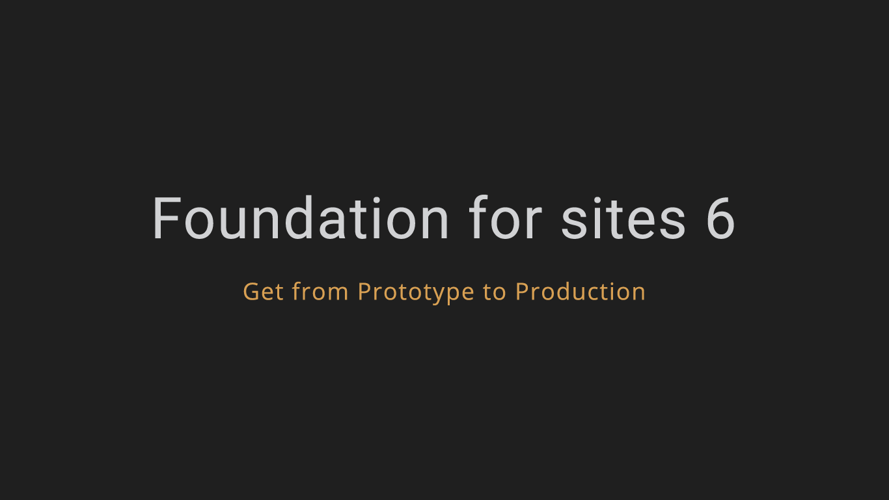

My project involves designing and building a web interface prototype for Jyoti Bhatt’s photographic series ‘Living Traditions of India’. Over 30,000 photographs were taken by Jyoti Bhatt during four decades of his travel across villages, towns and cities in central and western India. His work contributes significantly to our understanding of Living Traditions as an artistic and cultural movement that dominated the modern Indian art ecology in the immediate decades following India’s political independence in 1947. These and other photographs, his artwork and texts by and on him, have been digitised and annotated by Asia Art Archive (AAA) as part of the Baroda Archives project.
One of AAA’s primary objectives is to make available as much of its digitised content available online via its website. This has meant that users access a large quantity of digitised images and documents via the standard interface designed for the AAA website. The present AAA website (as of December 2016) does not allow for an optimum viewing experience of images, nor does it allow easy navigation between folders and individual objects/items. However as we know, framing devices, contexts and interfaces significantly shape our experience of seeing and perceiving. My proposition via this project has been that the Living Traditions series of photographs by Bhatt demanded a customized interface that would allow viewers to navigate the vast quantities of images, while simultaneously comprehending the collection in its full complexity, depth and scale.
The project began by questioning the gap that is often assumed to exist between the developer and the designer. This is best evident in the workflow and division of work between designer and developer. However, this causes no small amount of disjuncture in the creative process and outcome. The challenges in making these two practices intersect are varied. For instance, digital information requires us to access technologies that are changing at an ever-increasing pace. This then recalibrates the work that interface designers have to undertake.
 Server
Server
A cross look at the digital and traditional archives.
The Living Traditions series consists of over 30,000 photographs. This poses the primary challenge in the design and structure of the interface. That is, for the interface to allude to the sheer volume of photographs in the collection, and at the same time, be accessible not as individual images but as sub-collections. These could then be categorised and browsed by year, place or genre.
The digital archive is only a pause between interfaces. The immediate interface for a digital collection before the web interface are the APIs created after the contents are digitised in/by the archive. In the case of the Jyoti Bhatt Archive at Asia Art Archive, this is still under process. So the prototype of the web interface here is partially hypothetical in the absence of a public API.
My main assets to develop this interface were the experience of composition held in the chaotic studio process as an artist and as someone who has recently been interested in technology. A problem for me is not a solution seeking venture and it is definitely not the nature of a linear process of programing. The conflict between these two processes demanded that I discover a momentum that is already registered in the history of my creative practice. A revisit to some of my works identified this in a new perspective.
-

toandfro -

Postcards
The design for my project at the beginning was triggered by the photographer's contact sheets. This has the potential to convert elements on the filmstrip to user interface (ui). A contact sheet, as is known, is a piece of photographic paper onto which all the negatives or positives on a film have been contact printed. In other words, the contact sheet is not the photographic negative reel, but in fact a developed print; an image produced from film, akin to thumbnails. The defining characteristic of the contact print however, which sets it apart from developed photographic prints or thumbnails, is that the resulting print is the same size as the original (film), and not projected through an enlarger. In the case of Jyoti Bhatt, the contact sheets were an important part of the photographic process – containing the photographer’s marks, film details, and so on. They also lent themselves as visual devices to structure the interface. The wireframe for the interface therefore has drawn on the structure of the contact sheet as a base. These insights in using photographer’s contact sheet as the prime design motif of the navigation system were further confirmed after conversations with Jyoti Bhatt.

Detail of Jyoti Bhatt's contact sheet from AAA.
But the architecture of web layout is already changing and it is no more a direct translation of static layout models. The columns and the new flexbox address the responsive layout. One of the effective ways of framing the "Living Traditions" series is by putting it into a grid layout. This also falls back to the contact sheet appearance. The content drives the layout. Few examples of diplay which followed grid system are provided below:
-

Andy Warhol, Sixteen Jackies, 1964, acrylic and silkscreen ink on canvas, 80"x64".
Interface is designed to be device agnostic; it works with mouse, touch and motion events.
API
-

API -

Still from "Ivan's Childhood"
The definition of API superimposed with the trench kiss in "Ivans Childhood"
Framework
Although this project does not use a majority of features offered by the framework, it will be helpful for development stages to overcome the hurdles of coding by making use of the common structure provided by the framework.
DocumentationAnimation
- CSS transitions are meant for simple interface flourishes.
- jQuery's $.animate() is slow and poorly-equipped for motion design.
- Velocity is a fast, feature-rich standalone alternative to jQuery's $.animate().

Colorbox accepts settings from an object of key/value pairs, and can be assigned to any HTML element.
DocumentationLogo
Logo represents both the analogue and digital elements. Data is viewed inside the aperture. A set of icons resulted in the process of designing this logo.
Color
Everything in the dark background focused on the images better. Dark as deep gray. There is no end to the selection of colors since this project do not suggest any pallette by itself. After many experiments I decided to bring it down with the colors on a film and the film roll. The present pallete is the result of refinement based on the choices above.
Background
Links
Navigation
Title
Title:hover
Typography
I realized there is no strict formula to design. I kept moving from wireframes to the frontend, reciprocating frequently. The design is also sensitive to colours and typography. At times these also played a central role in design. Finding a font is not a hunting outwards but rather a process of inhabiting in the content.
Open Sans
Open Sans is the only font used entirely in the interface.
This humanist sans-serif typeface designed by Steve Matteson and released in 2011. The five weights with matching italics make Open Sans extremely versatile and useful for a wide range of applications. It is a ubiquitous font on the web, used by everyone from Google to WordPress. I’ve even heard it referred to as the “flat design” font. I like to think of Open Sans as the new Arial. typewolf
Libre Baskerville
Libre Baskerville is used in this documentation for the body text a;ong with Open Sans.
Libre Baskerville is an open-source serif typeface available for free from Google Fonts. It was designed by Pablo Impallari and based off of a version of Baskerville by American Type Founders from 1941. In my opinion, it’s one of the highest-quality serifs available from Google Fonts. Libre Baskerville is available in normal, italic and bold, but unfortunately there is no bold italic version. typewolf
Source Code Pro
This monotype font is used to render code snippets in the documentation.
Source Code Pro is a set of OpenType fonts that have been designed to work well in user interface (UI) environments. In addition to a functional OpenType font, this open source project provides all of the source files that were used to build this OpenType font by using the AFDKO makeotf tool. adobe
Wireframe
Reference
Websites
Articles
- Maintainable CSS
- Flexbox
- Minimal Interface
- Thought as a Technology
- Line Simplification
- Is Data Visualization the Future of Art?
- Generous Interfaces for Digital Cultural Collections
Books
- Berry, David M (2011) The philosophy of software: code and mediation in the digital age. Palgrave Macmillan, Basingstoke. ISBN 9780230244184
- Jacobson, Daniel, Brail, Greg and Woods, Dan (2012) APIs: A Strategy Guide. O'Reilly. ISBN 978-1-449-30892-6
Credits
- Sabih
- Sneha
- Suman
- Rashmimala
- Michael
- Lynda
- David
- Vivian
- Lokesh
- Avigna
- Santhosh
- Neha
- Foundation 6
- velocity.js
- colorbox
- Github